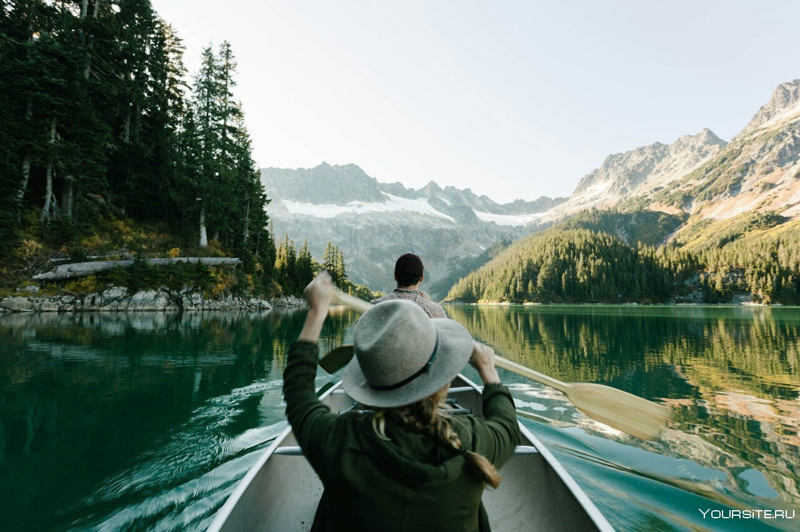

Подготовка к путешествию
Мы заботимся о вашем комфорте и беззаботности во время поездки, поэтому предлагаем ряд полезных советов и информации для успешного путешествия.
Перед отъездом
- Документы и визы: Пожалуйста, убедитесь, что у вас есть все необходимые документы, включая визы и заграничные паспорта, если они требуются для выбранного вами маршрута.
- Медицинская страховка: Рекомендуем оформить медицинскую страховку на весь период поездки. Это обеспечит вас надежной защитой в случае непредвиденных обстоятельств.
Упаковка и одежда
- Сезон и климат: Учитывайте сезон и климат места, которое вы собираетесь посетить. Подготовьтесь к различным погодным условиям, включая теплые летние дни и прохладные вечера.
- Удобная обувь: Выбирайте удобную обувь для пеших прогулок и осмотра достопримечательностей.
Важная информация
- Язык и обычаи: Изучите основные фразы на местном языке и основные культурные особенности региона, чтобы чувствовать себя более уверенно.
- Безопасность: Просмотрите рекомендации по безопасности для выбранного маршрута. Соблюдайте меры предосторожности и следуйте советам гидов.
Дополнительные опции
- Фото и видео: Подготовьте свой фотоаппарат или смартфон для запечатления красивых моментов. Рассмотрите возможность приобретения фото- или видео-тура для создания профессиональных воспоминаний.
- Путеводитель: Перед поездкой изучите основную информацию о местах, которые вы посетите. Наши гиды также будут готовы поделиться увлекательными историями и фактами.
Готовы начать свое приключение?
Собравшись с силами, с чувством волнения и предвкушения, вы готовы отправиться в увлекательное путешествие по России. Наша команда старается сделать ваш отдых легким и незабываемым, а эта страница поможет вам быть подготовленными ко всему. ¡Приключения ждут вас, давайте начнем вместе!